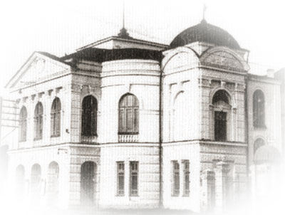
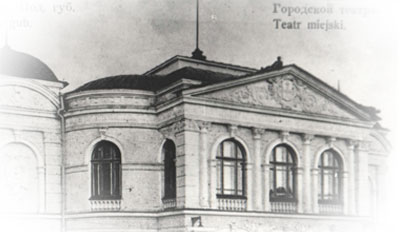

Історія театру
Вінничани мріяли про театр - вони його й отримали. Та до створення власного стаціонарного театру, з власною трупою ще було далеко. До 1917 на сцені виступали виключно заїжджі актори. Стаціонарний український театр з’явився лише у 1920 році під керівництвом Гната Юри. Амвросій Бучма, Олексій Ватуля, Володимир Сокирко, Феодосія Барвінська починали свій творчий злет саме на сцені Вінницького театру, який у 1923 р. переїхав до Харкова, а згодом до Києва, де отримав постійну прописку. Йдеться про Національний академічний театр ім.І.Франка, який з гордістю говорить про свою колиску - вінницьку сцену. Серед документів можна побачити листи - клопотання про створення власного стаціонарного театру, кількість яких усе збільшувалась...
І ось 17 жовтня 1933 р. оперою Д.Верді “Аїда” відкрився перший сезон театру, який спочатку функціонував як обласний театр опери та балету, ставши провідником музичної культури в трудящі маси Поділля. Художнє керівництво очолив актор і режисер С.Бутовський. Оперний період історії Вінницького театру залишив значний слід в культурному житті міста й області. У 1940 році постановою Раднаркому України Вінницький театр опери та балету реорганізували на український обласний музично-драматичний театр, початок якого виявився надзвичайно продуктивним. У роки Великої Вітчизняної війни театр продовжував своє функціонування. Під час звільнення міста ( у березні 1944 р.) від німецько-фашистських загарбників приміщення Вінницького театру було серйозно пошкоджене.
На реставрацію, здійснену за проектом архітектора Д.Чорновола, знадобилось 4 роки. Трупа ж своє служіння продовжувала у колишньому клубі промкооперації. І вже наприкінці квітня 1944 тут було показано невмирущу “Наталку Полтавку”. Подібно Фенікс, Вінницькому театрові судилось відродитись з попелу, соколом злетіти не одному поколінню творців невмирущого мистецтва… Наказом Комітету у справах мистецтв при Раднаркомі України від 13 листопада 1948 року Ізмаїльський музично-драматичний театр було об’єднано з Вінницьким.
Федір Верещагін очолив заново сформовану трупу. Новий театральний сезон розпочався у відродженому приміщенні виставою "Інтервенція" 6 листопада 1948р. Розпочалась нова ера театру. Згуртований талановитим режисером і організатором театральної справи н.а. УРСР та СРСР Федором Верещагіним, колектив однодумців натхненно працював над постановками кращих творів вітчизняної та світової драматургії. З 1986 р. театр очолює народний артист України Віталій Селезньов, учень і послідовник Ф.Г.Верещагіна.
Сьогодні ми говоримо про створення театру, який у жовтні 2013 відзначатиме 80-річчя. Звичайно, є над чим замислитись, а, можливо, й переосмислити якісь події та дати. Але беззаперечним є вірне служіння мистецтву й людям (хай комусь це не здається занадто помпезним!) колективу садівчан, який впевнено продовжує творити історію Вінницького театру, відповідно й історію театру України… Й завжди радо стрічає Свого глядача...